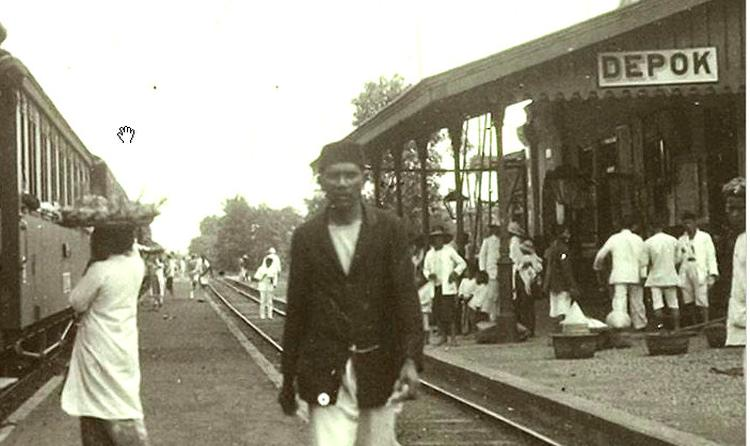
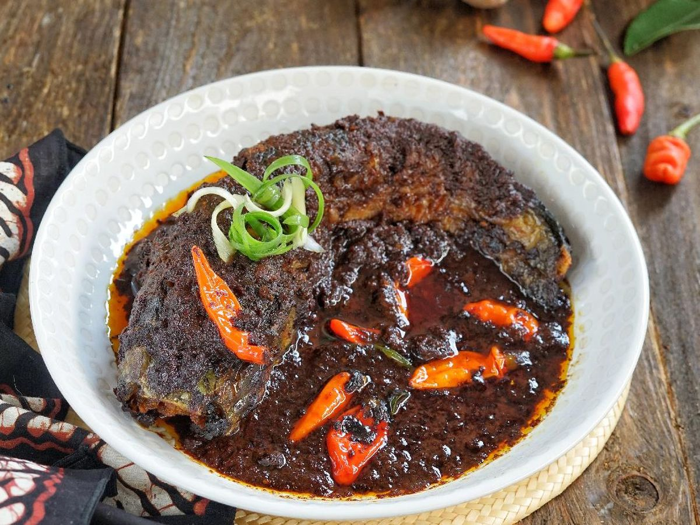
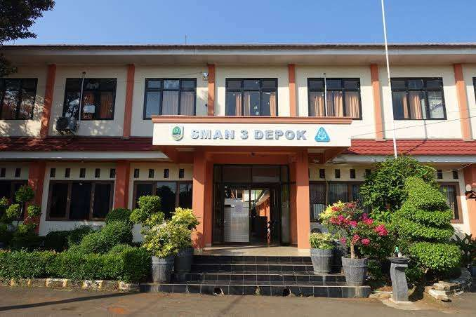

Depok berasal dari kata "De Eerste Protestantse Organisatie van Kristenen," yang didirikan oleh Cornelis Chastelein pada tahun 1714. Kota ini awalnya adalah kawasan perkebunan yang dikelola oleh pendatang Belanda. Seiring waktu, Depok berkembang menjadi kawasan pemukiman yang penting di Jawa Barat. Pada tahun 1999, Depok resmi menjadi kota administratif yang terpisah dari Kabupaten Bogor.
Sejarah Kota Depok

Tempat Wisata di Depok

Depok memiliki berbagai destinasi wisata menarik. Beberapa di antaranya adalah Situ Pengasinan, Taman Rekreasi Wiladatika, dan Kebun Binatang Universitas Indonesia. Situ Pengasinan adalah danau buatan yang cocok untuk rekreasi keluarga, sedangkan Taman Wiladatika menawarkan taman bermain dan kolam renang. Kebun Binatang UI adalah tempat yang ideal untuk mengenalkan anak-anak pada flora dan fauna lokal.
Kuliner Khas Depok

Kuliner di Depok sangat beragam, mulai dari masakan tradisional hingga makanan modern. Beberapa kuliner khas Depok yang populer adalah Sayur Gabus Pucung, Soto Depok, dan Nasi Uduk Depok. Selain itu, Depok juga dikenal dengan berbagai tempat makan yang menyajikan masakan Sunda dan makanan laut yang segar.
Pendidikan di Depok

Depok dikenal sebagai kota pendidikan karena banyaknya institusi pendidikan berkualitas yang ada di sini. Salah satu yang paling terkenal adalah Universitas Indonesia (UI), yang merupakan salah satu universitas terbaik di Indonesia. Selain UI, Depok juga memiliki beberapa sekolah menengah dan pendidikan vokasi yang berkualitas.
Peta Kota Depok
Berikut adalah peta Kota Depok yang dibuat menggunakan WebGIS: